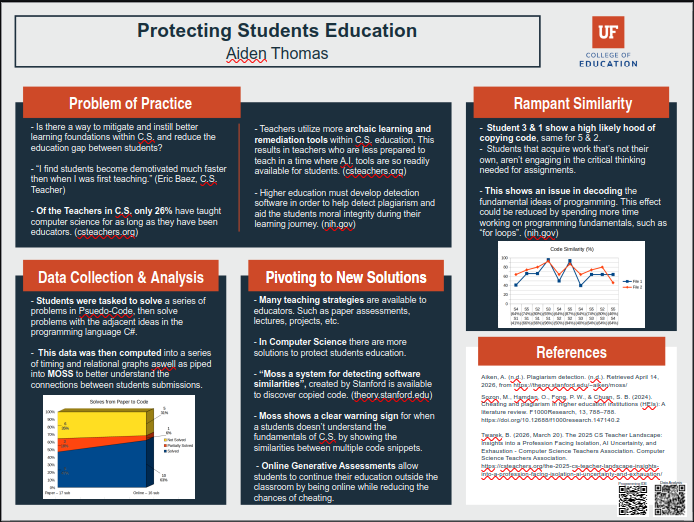

April 8. 2026
Data Collection and Goodbyes.
Observer: Aiden
Thomas
Teacher: Eric Baez
Reflections on Classroom Observation
This week marked the conclusion of my observation period at Loften High School, as I finalized my data collection and said goodbye to Eric's class. Over the course of the weeks, I had witnessed varied levels of student engagement across multiple programming assignments—Counter, Fibonacci, FizzBuzz, and Multiplication problems. By the end of the fourth week, 6 students had successfully completed all four tasks, while progression varied significantly among the class, with some students completing only one or two assignments and two students not completing any . With the formal observation period ending, I shifted my focus to conducting individual student interviews to better understand their thoughts, feelings, and experiences with the recursion unit and programming assignments overall. These conversations provided invaluable insight into the disconnect between student performance data and their actual learning experiences, revealing that some students felt overwhelmed by the pace while others found the material too repetitive.
Data AnalysisBelow is an image of the finalized presentation of the collected information

During the interviews, several students openly discussed their approaches to problem-solving, and some acknowledged using online resources more heavily than I had initially realized. This candid feedback helped contextualize the code similarity patterns I had observed, where certain student pairs showed similarity percentages as high as 96% to online sources . Students expressed that while they understood the importance of learning to code independently, the pressure to complete multiple assignments within tight deadlines sometimes led them to seek external solutions rather than struggle through the learning process. These conversations underscored Eric's earlier observation about needing to connect assignments to students' personal motivations—many students admitted they completed work simply for grades rather than genuine interest in the material.
Moving forward, I intend to use these interview insights to inform my future teaching practice, particularly regarding how to create a classroom environment where students feel comfortable asking for help before turning to online solutions. I also recognize the value of building in more opportunities for formative feedback and one-on-one check-ins during the coding process, which could help identify struggling students earlier and address the underlying motivation issues Eric had identified.
Comfortability: 8/10 I selected this rating because conducting the interviews felt natural and provided closure to my observation experience, though I recognize that some students may not have been entirely forthcoming about their challenges, and building deeper trust would have yielded even richer insights into their learning processes.